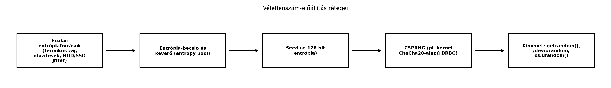

Amikor a böngésződ HTTPS-kapcsolatot létesít, amikor a banki alkalmazásod aláír egy tranzakciót, vagy amikor egy jelszókezelő új mesterkulcsot generál, mindenütt ugyanarra van szükség: olyan bitekre, amelyeket a támadó nem tud megtippelni. Ha ezek a bitek kiszámíthatók, hiába az AES, a Diffie–Hellman vagy bármilyen elegáns protokoll, mert a támadó előbb kitalálja a kulcsot, mint hogy a rejtjel megvédene. Ebben az alfejezetben megkülönböztetjük a statisztikai és a kriptográfiai véletlenszám-generátort, bemutatjuk az entrópiaforrásokat, és rámutatunk, miért katasztrofális a kiszámítható véletlen.
A modern operációs rendszerekben a véletlenszámok előállítása három rétegre bontható: fizikai entrópiaforrásokra, az ezeket keverő entrópiagyűjtőre, valamint a determinisztikus kriptográfiai generátorra. Az alábbi ábra ezt a láncot mutatja:

A felső két réteg biztosítja a valódi, megjósolhatatlan kiindulópontot, a harmadik réteg pedig gyorsan, tetszőleges mennyiségű bitet állít elő anélkül, hogy a támadó a kimenetből a belső állapotra következtethetne. A statisztikai pszeudovéletlen-generátorok ezzel szemben a seed ismeretében teljesen kiszámíthatók, és gyakran a kimenetükből is visszafejthető a belső állapot.
Definíció. Valódi véletlenszám-generátornak (TRNG, true random number generator) nevezzük azt a fizikai folyamatot vagy eszközt, amelynek kimenete nem determinisztikus, és a bites kimenetek eloszlása egyenletes. A valódi véletlent általában termikus zajból, oszcillátor-jitterből, radioaktív bomlásból vagy más kvantumfizikai, illetve nagy entrópiájú makroszkopikus zajból nyerik.
A számítógépben több ilyen forrás is rendelkezésre áll. A
processzorok egy része hardveres utasítást biztosít: az Intel és az AMD
processzorok RDRAND és RDSEED utasításai
dedikált hardveres zajforrásból származó biteket adnak. Emellett az
operációs rendszer folyamatosan gyűjti az ún. környezeti entrópiát: a
billentyűleütések és egérmozgások időzítéseit, a hálózati csomagok
érkezési időpontjait, a lemez- és SSD-vezérlők válaszidejét, valamint az
eszközillesztők megszakításainak pontos időbélyegeit. A Linux kernel
ezekből egy ún. entropy poolt épít, amelyből seedeli a kriptográfiai
generátort.
Fontos megérteni, hogy a valódi véletlen előállítása lassú lehet, és a források minősége nem garantált: egyes beágyazott eszközökön, például routereken vagy IoT-szenzorokon szinte nincs billentyűzet, egér vagy lemez, így az entrópia gyűjtése nehéz. Ezért a gyakorlatban a TRNG-t elsősorban a CSPRNG seedelésére használják, nem pedig közvetlenül nagy mennyiségű kulcs generálására.
Definíció. A pszeudovéletlen-generátor (PRNG, pseudorandom number generator) egy determinisztikus algoritmus, amely egy kezdeti seed értékből kiindulva olyan bitsorozatot állít elő, amely statisztikai tesztek szerint véletlennek tűnik: a bitek eloszlása egyenletes, nincs nyilvánvaló periódus rövid távon, és az egymást követő értékek korrelálatlanok.
A legegyszerűbb és legrégebbi PRNG a lineáris kongruencia-generátor (LCG):
ahol a szorzó, a növekmény, a modulus. Az LCG matematikailag egyszerű és gyors, de kriptográfiai célra teljesen alkalmatlan. Ha a támadó ismeri a modulust (ami gyakran nyilvános, például ), akkor már három egymás utáni kimenetből vissza tudja állítani az és paramétereket, és ezután az összes jövőbeli értéket meg tudja jósolni:
feltéve, hogy a különbség invertálható modulo ; majd .
A Mersenne Twister (konkrétan az MT19937) sokkal
jobb statisztikai tulajdonságokkal rendelkezik, óriási,
hosszúságú periódussal, és a modern programnyelvek alapértelmezett
PRNG-je (például a Python random modulja is ezt használja).
Ám a Mersenne Twister sem kriptográfiai: a belső állapota 624 darab 32
bites szóból áll, és ha a támadó megfigyel 624 egymás utáni 32 bites
kimenetet, akkor az inverz tempering lépésekkel rekonstruálni tudja a
teljes belső állapotot. Ezután a generátor minden jövőbeli kimenete
pontosan megjósolható.
Figyelem. A statisztikai tesztek (például a Diehard vagy a TestU01 BigCrush) csak azt ellenőrzik, hogy a kimenet hasonlít-e egy egyenletes eloszlású véletlen sorozatra. Azt nem tudják garantálni, hogy egy támadó ne tudná a kimenetet a seedből vagy korábbi bitekből kiszámítani. A Mersenne Twister átmegy a BigCrush teszten, mégis néhány kimenetből visszafejthető.
Továbbvitt eredmény. Az LCG és a Mersenne Twister gyengesége a Véletlenszám-hibák alfejezetben konkrét incidensek elemzéséhez szükséges: ott mutatjuk meg, hogyan vezettek ezek a PRNG-k session ID-k és kártyakeverések feltöréséhez.
A kriptográfiai generátor egy speciális pszeudovéletlen-generátor, amelyet úgy terveztek, hogy a kimenet még akkor is megjósolhatatlan legyen, ha a támadó tetszőlegesen sok korábbi bitet látott. A következő definíció informálisan ragadja meg a két központi követelményt.
Definíció. Legyen egy determinisztikus algoritmus, amely egy seedből bitsorozatot állít elő. A -t kriptográfiai véletlenszám-generátornak (CSPRNG, cryptographically secure pseudorandom number generator) nevezzük, ha teljesül:
Az első tulajdonság azt mondja ki, hogy a kimenet gyakorlatilag megkülönböztethetetlen a valódi véletlentől. A második pedig az állapotkompromittálódás korlátozására szolgál: ha egy támadó rövid időre hozzáfér a belső állapothoz, az ne tegye lehetővé a korábbi kulcsok utólagos visszafejtését. A CSPRNG-k tipikusan szimmetrikus primitívekből épülnek fel: blokkrejtjelből, hash-függvényből vagy dedikált folyamrejtjelből, és a seedet valódi entrópiaforrásból nyerik.
Példa (LCG mint ellenpélda). Tekintsük az lineáris kongruencia-generátort indulással. Az első négy kimenet:
Ha a támadó csak a értékeket látja, és tudja, hogy , akkor a fenti képlettel:
Mivel páratlan, az inverze modulo létezik: , vagyis . Így , majd . Ezután a következő értéket pontosan megjósolja: . Ez az egyszerű példa mutatja, miért nem szabad LCG-t biztonsági célra használni.
Az alábbi ábra a támadást lépésenként, Pythonnal újraszámolt értékekkel mutatja ( mellett a kimenetek ): a különbségek is egy LCG szerint fejlődnek, , ezért két különbség hányadosa adja -t.
A CSPRNG biztonsága a seed minőségén áll vagy bukik. Ha a támadó meg tudja tippelni a seedet, akkor az egész kimenetet szimulálni tudja. Ezért a kernelnek először elegendő entrópiát kell gyűjtenie, majd ebből kell seedelnie a generátort.
Linuxon a kernel entropy poolja folyamatosan gyűjti a fent említett forrásokat. A felhasználói programok kétféleképpen férhetnek hozzá:
getrandom() rendszerhívás a modern, ajánlott
interfész. A hívás a kernel CSPRNG-jéből ad vissza véletlen bájtokat, és
a rendszer indulása után nem blokkol, mert a kernel már elegendő
entrópiát gyűjtött./dev/urandom eszközfájl ugyanerre a generátorra
mutat, és szintén nem blokkol. A /dev/random régebben
blokkolhatott, amíg a kernel entrópia-becslője szerint nem gyűlt össze
elég véletlen; a modern Linux kernelekben a /dev/random is
ugyanazt a CSPRNG-t használja, és lényegében nem blokkol.A gyakorlati ajánlás: ne használjunk
/dev/random-ot, mert a blokkolás teljesítményproblémákat
okozhat, és a /dev/urandom ugyanolyan biztonságos, ha a
kernel már elindult. Pythonban a secrets modul és az
os.urandom() is a getrandom()-ra épül.
A seedeléshez legalább 128 bit, ideális esetben 256 bit entrópia szükséges. Az operációs rendszer a háttérben gondoskodik erről, de beágyazott rendszereken, virtuális gépeken vagy konténerekben előfordulhat, hogy az entrópiaforrások szűkösek. Ilyenkor a generátor kimenete gyenge lehet, amit például a Véletlenszám-hibák alfejezet tárgyal részletesen.
Továbbvitt eredmény. A CSPRNG követelményei adják az alapot a Pszeudovéletlen generátor és a szinkron folyamrejtjel alfejezetben tárgyalt folyamrejtjelekhez: ott a kulcsból származtatott pszeudovéletlen bitsorozatot használjuk a nyílt szöveg maszkolására, és a biztonság éppen az előrejelezhetetlenségen múlik. A Kriptográfiai véletlenszám-generátorok a gyakorlatban alfejezet a determinisztikus szabványokat (NIST SP 800-90A DRBG-k; az entrópiaforrásokra a NIST SP 800-90B; szabványszámok: ellenőrizendő) fejti ki részletesen.
A véletlenszám-hibák a gyakorlatban gyakran úgy jelennek meg, hogy a fejlesztő a kényelmes, statisztikai PRNG-t használja kriptográfiai célra. Két jellegzetes esettípus:
Kiszámítható munkamenet-azonosítók (session ID).
Előfordult, hogy webes alkalmazások a munkamenet-azonosítókat a PHP
mt_rand() függvényével vagy más, nem kriptográfiai PRNG-vel
(például Mersenne Twisterrel) generálták. (Konkrét érintett
keretrendszert és verziót itt nem nevezünk meg; ellenőrzendő.) A támadó
megfigyelte a saját böngészője számára kiadott session ID-kat,
rekonstruálta a PRNG belső állapotát, majd megjósolta a más
felhasználóknak kiadott azonosítókat. Ezzel átvehette azok munkamenetét
anélkül, hogy jelszót tört volna.
Online póker és kaszinó kártyakeverés. Egy ismert esetben (1999 körül, ellenőrzendő) egy pókerszoftver a lapkeverést egy nem kriptográfiai PRNG-vel végezte, amelyet a rendszeróra értékével seedeltek; a lehetséges seedek kis száma miatt a támadó a saját lapjaiból és a közös lapokból visszakereste a seedet, és megjósolta a többi lapot. Az ilyen támadások nem a rejtjelezést törik fel, hanem a véletlenszám-generátort, ami a teljes rendszert kompromittálja.
A tanulság mindkét esetben ugyanaz: ha a véletlen előrejelezhető, a protokoll többi része hiába erős. Ezért kulcs, nonce, session token, aláírási véletlen (nonce) generálására kizárólag OS-szintű CSPRNG-t szabad használni.
Az alábbi kód szemlélteti, hogyan lehet egy gyenge LCG paramétereit
visszaállítani három kimenetből, és megmutatja a különbséget a
random és a secrets modul között.
# OKTATÁSI CÉLRA – NEM ÉLES HASZNÁLATRA
# Gyenge LCG: X_{n+1} = (a * X_n + c) mod m
m = 256
a = 45
c = 17
X = 100
kimenetek = []
for _ in range(4):
X = (a * X + c) % m
kimenetek.append(X)
print("LCG kimenetek:", kimenetek)
# Támadás: három egymás utáni kimenetből a paraméterek visszaállítása
x0, x1, x2 = kimenetek[0], kimenetek[1], kimenetek[2]
diff0 = (x1 - x0) % m
diff1 = (x2 - x1) % m
try:
a_talalat = (diff1 * pow(diff0, -1, m)) % m
except ValueError:
print("diff0 nem invertálható, próbálj más kimenetet")
else:
c_talalat = (x1 - a_talalat * x0) % m
print("Visszaállított a:", a_talalat, "c:", c_talalat)
# Következő érték előrejelzése
x3_valos = (a * x2 + c) % m
x3_josolt = (a_talalat * x2 + c_talalat) % m
print("Valós következő:", x3_valos)
print("Megjósolt:", x3_josolt)
# Python random vs secrets
import random
import secrets
random.seed(12345) # determinisztikus, csak teszt
print("random.randint:", [random.randint(0, 99) for _ in range(4)])
# Kriptográfiai véletlen: minden futtatáskor más
print("secrets.token_hex(4):", secrets.token_hex(4))A random modul kimenete determinisztikus: ugyanazzal a
seeddel mindig ugyanaz a lista adódik. A
secrets.token_hex(4) minden futtatáskor más 8 hexadecimális
jegyű értéket ad, mert az operációs rendszer CSPRNG-jét használja. Az
LCG-támadás kimenete a fenti kézi számolással egyezik:
a = 45, c = 17, a megjósolt következő érték
pedig 112.
A random modul használata
kulcsgenerálásra. A Python random modulja Mersenne
Twistert használ, amely statisztikailag szép, de kriptográfiai
értelemben előrejelezhető. Kulcsot, nonce-ot, session tokent vagy
aláírási véletlent soha ne generáljunk vele; használjuk a
secrets modult vagy az
os.urandom()-ot.
Gyenge seed, például időbélyeg. Ha a támadó
ismeri a seed generálásának időpontját (ez gyakran nyilvános), akkor a
time.time() értékből vagy a processz ID-ből képzett seedet
brute-force-szal kipróbálhatja. A seednek legalább 128 bit valódi
entrópiából kell származnia.
Statisztikai tesztek biztonsági garanciaként való félreértelmezése. Az, hogy egy generátor átmegy a Diehard vagy BigCrush teszten, nem jelenti azt, hogy kriptográfiailag biztonságos. A Mersenne Twister a legszigorúbb statisztikai teszteken is átmegy, mégis visszafejthető az állapota.
/dev/random blokkoló használata. A
hagyományos tanács gyakran /dev/random-ot ajánl, de ez
blokkolhat, és teljesítményproblémát okozhat. Modern Linuxon a
/dev/urandom vagy a getrandom() ugyanolyan
biztonságos, és nem blokkol.
Beágyazott rendszerekben az entrópiaforrások hiánya. Routereken és IoT-eszközökön gyakran nincs billentyűzet vagy lemez, ezért az entrópia szűkös lehet. Ilyenkor a gyenge seed miatt a generált kulcsok előrejelezhetőkké válhatnak. A gyártóknak dedikált hardveres TRNG-t vagy az első üzembe helyezéskor gyűjtött entrópiát kell használniuk.
/dev/urandom blokkol, ha nincs elég
entrópia a rendszerben?A válaszok a ### Megoldások elején találhatók.
1. feladat (A) Számítsd ki az LCG első négy kimenetét az alábbi paraméterekkel: , , , .
2. feladat (A) Fogalmazd meg informálisan, mit jelent a CSPRNG next-bit unpredictability tulajdonsága, és miért fontos ez a kulcsgenerálásban.
3. feladat (B) Adott egy LCG három egymás utáni kimenete: , , , és a modulus . Határozd meg az szorzót és a növekményt, majd jósold meg -at.
4. feladat (B) Írj Python függvényt, amely egy LCG kimeneteiből (modulus, és három egymás utáni érték) visszaadja az és paramétereket, ha a különbség invertálható. Teszteld a 3. feladat adataival.
5. feladat (C) Indokold meg, miért alkalmatlan az LCG folyamrejtjel kulcsfolyam-generátorának. Hivatkozz a Pszeudovéletlen generátor és a szinkron folyamrejtjel alfejezetben bevezetett fogalomra, és mutasd meg, hogy a támadó hogyan tudná az üzenetet visszafejteni, ha ismeri a kódolást.
6. feladat (D) Tekintsd az alábbi játékimplementációt (oktatási célra, saját rendszeren):
import random
import time
def generate_session_token():
random.seed(int(time.time()))
return str(random.getrandbits(128))Elemezd a hibákat, és írd le, hogyan támadná a token generálását egy támadó, aki látott néhány tokent, és ismeri a kódot. Milyen javítást javasolnál?
secrets modul függvényeit (pl.
secrets.token_bytes(n), secrets.token_hex(n),
secrets.randbelow(n)) vagy az os.urandom(n)
függvényt használjuk./dev/urandom nem blokkol, mert a kernel CSPRNG-je a
rendszer indulása után már elegendő entrópiával rendelkezik. A
/dev/urandom ugyanazt a generátort használja, mint a
getrandom().1. feladat (A)
Az LCG rekurzió:
.
.
.
.
.
,
és a sorozat innen ismétlődik. Az első négy kimenet:
.
2. feladat (A)
A next-bit unpredictability informálisan azt jelenti, hogy ha egy támadó
ismeri a generátor algoritmusát és az eddig összes kimeneti bitet, akkor
sem tudja a következő bitet
-nél
nagyobb valószínűséggel megtippelni. Ez azért fontos a
kulcsgenerálásban, mert ha a támadó a korábbi kulcsokból vagy
nonce-okból meg tudná jósolni a következőt, akkor az összes későbbi
titkosítást feltörhetné anélkül, hogy a rejtjelet támadná.
3. feladat (B)
Ismert:
,
,
,
.
Különbségek:
.
.
Keressük
-t:
,
azaz
.
Inverz:
.
Kiterjesztett euklideszi algoritmussal:
,
,
,
.
Visszafelé:
,
tehát
(ellenőrzés:
;
Pythonban pow(26, -1, 101) ugyanezt adja).
Így
.
.
,
tehát
.
Ellenőrzés:
.
,
valóban
.
.
,
tehát
.
4. feladat (B)
# OKTATÁSI CÉLRA – NEM ÉLES HASZNÁLATRA
def recover_lcg(m, x0, x1, x2):
d0 = (x1 - x0) % m
d1 = (x2 - x1) % m
try:
a = (d1 * pow(d0, -1, m)) % m
except ValueError:
return None, None # d0 nem invertálható
c = (x1 - a * x0) % m
return a, c
a, c = recover_lcg(101, 17, 43, 91)
print("a =", a, "c =", c)
x3 = (a * 91 + c) % 101
print("X3 =", x3)Várt kimenet: a = 64 c = 66, X3 = 32.
5. feladat (C)
A folyamrejtjel biztonsága azon múlik, hogy a kulcsfolyam (keystream)
pszeudovéletlen, tehát a támadó a nyílt szöveg ismerete nélkül ne tudja
megkülönböztetni a kulcsfolyamot egy valódi véletlen bitsorozattól. Az
LCG ezt nem teljesíti: a támadó a kulcsfolyam néhány egymás utáni
értékéből (amelyet például ismert nyílt szövegű részből vissza tud
fejteni, mert
)
visszaállítja az
és
paramétereket, és onnantól az egész kulcsfolyamot megjósolja. Így minden
további rejtett szöveget visszafejthet anélkül, hogy a kulcsot ismerné.
Ezért a folyamrejtjel kulcsfolyam-generátorának CSPRNG-nek kell lennie,
nem pedig statisztikai PRNG-nek.
6. feladat (D)
A játékimplementáció hibái: - A seed az aktuális időbélyeg
(int(time.time())), amely másodperc pontosságú, és könnyen
kitalálható. - A random modul Mersenne Twistert használ,
amely kriptográfiailag nem biztonságos. - A
getrandbits(128) kimenete a seedből determinisztikusan
számítható.
Támadási forgatókönyv: a támadó megfigyel néhány tokent, és ismeri a kódot. Az időbélyeg körüli kis tartományban (például az utolsó órában) minden másodpercre kipróbálja a seedet, és ellenőrzi, hogy a generált 128 bites érték egyezik-e a látott tokennel. Amint egyezik, megtalálta a seedet, és onnantól az összes jövőbeli tokent meg tudja jósolni. A brute-force keresés mérete másodpercenként egy seed, ami triviális.
Javítás: használjunk secrets.token_hex(16)-ot vagy
secrets.token_bytes(16)-ot, amely az OS CSPRNG-jéből
származik; ne állítsunk be seedet, és ne használjunk időbélyeget.
A véletlenszámok minősége a kriptográfia egyik legkritikusabb alapja.
A valódi véletlenszám-generátorok (TRNG) fizikai zajból nyerik a
biteket, de lassúak, ezért a gyakorlatban a seedelésre szolgálnak. A
statisztikai pszeudovéletlen-generátorok, mint az LCG vagy a Mersenne
Twister, determinisztikusak és kimenetükből a belső állapot
visszafejthető: az LCG-hez három kimenet is elég a paraméterek
meghatározásához, az MT19937-hez pedig 624 darab 32 bites kimenet. A
kriptográfiai véletlenszám-generátor (CSPRNG) ezzel szemben teljesíti a
next-bit unpredictability és a backtracking resistance követelményeit,
ezért kulcsok, nonce-ok és tokenek generálására csak ez használható.
Linuxon a getrandom() és a /dev/urandom
biztosítja ezt; Pythonban a secrets modul, nem a
random. Továbbvitt eredmény: a CSPRNG
követelményei alapozzák meg a Pszeudovéletlen
generátor és a szinkron folyamrejtjel fejezet
folyamrejtjel-konstrukcióit és a Kriptográfiai
véletlenszám-generátorok a gyakorlatban szabványait. Az LCG és a
Mersenne Twister gyengesége a Véletlenszám-hibák alfejezetben konkrét incidensek
elemzéséhez szükséges.
A Mersenne Twister specifikációja nyilvános szabvány és a CPython
random modul dokumentációja ellenőrizhető; a Linux kernel
CSPRNG architektúráját a kernel forráskódja és a getrandom
rendszerhívás dokumentációja írja le. A Python secrets
modul API-ja a hivatalos Python dokumentációból ellenőrizhető. Az
alfejezetben szereplő incidensek (session ID prediction, online póker
kártyakeverés) általánosan ismert esettípusok, de konkrét CVE-számokat,
évszámokat és érintett verziókat külön ellenőrzés nélkül nem adtam
meg.